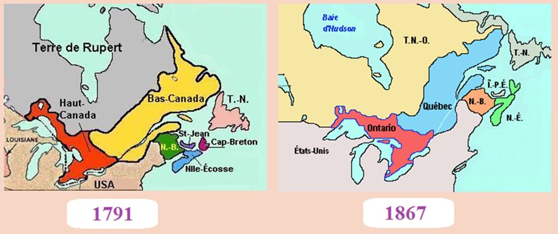

La nation québécoise est aujourd’hui confrontée à différents problèmes, dont les quatre problèmes majeurs sont :
Le remplacement de sa population par l'immigration massive qui ne s'intègre pas à la culture québécoise et qui préfère la langue anglaise et la culture anglo-américaine au français.
Le multiculturalisme, qui ne favorise pas l’intégration des nouveaux arrivants et qui est en train d’anéantir la culture québécoise.
La baisse de la natalité des couples Québécois de souche, qui a pour conséquence de ne plus permettre l'auto-reproduction de la société québécoise.
L'offensive antisociale du gouvernement libéral actuel qui est en train de sabrer dans les programmes sociaux, dans les services de santé et dans l'éducation, ainsi démantelant les infrastructures sociales du Québec.
Quand je parle d'immigration massive qui est en train de remplacer la population québécoise, je n'ai aucune hostilité envers les immigrants, j'ai toujours été le premier à les défendre. Je suis hostile aux gouvernements fédéral et provincial qui imposent cette politique d'immigration au peuple québécois. Nous vivons une certaine similarité avec la situation du peuple palestinien qui a été remplacé par la colonisation juive en Palestine. Bien sûr nous ne sommes pas persécutés comme le peuple palestinien l'a été et l’est encore aujourd’hui, mais le résultat est le même, en se fait remplacer inexorablement notamment à Montréal où les Québécois de souche de langue française sont maintenant minoritaires.
Le Québec a une population 8 fois plus petite que la France, soit 8,2 millions et la France a une population de 66,03 millions. Le Québec accueille annuellement 50 000 immigrants alors que la France en accueille 200 000. Proportionnellement le Québec accueille deux fois plus d'immigrants que le France. L’oligarchie financière québécoise a même parlé de doubler et même de tripler le nombre d'immigrants acceptés annuellement.
Une citation du « Portrait démolinguistique 1996‐2011 » de l’Office québécois de la langue française extraite de l’essai «GUIDE D'ACCÈS à l'indépendance» de Me Guy Bertrand : «Selon ce rapport, le poids démographique des personnes de langue maternelle française sur l’île de Montréal entre 1996 et 2011 est passé de 52 % à 47 %.» (1) (2) Nous pouvons donc en déduire qu’à Montréal, les francophones de souche sont devenus minoritaires et que Montréal a perdu son titre de 2ième plus grande ville française au monde avant 2011. Juste pour vous donner une petite idée de la situation, un professeur de collège, d'origine syrienne, racontait que son fils en arrivant à la maison, lui disait : « Papa, un Québécois a un accent marocain ! ». Le père expliquait alors avec justesse que c'est impossible d'intégrer les nouveaux arrivants parce que dans les classes, les Québécois francophones de souche sont minoritaires sur l'île de Montréal.
Au Québec, il y a une culture anglo-américaine dominante et ces immigrants s'assimilent plutôt à cette culture et à l'anglais. On ne peut ni intégrer ni assimiler les immigrants à notre culture et au français tout simplement parce que nous sommes minoritaires à Montréal et que notre culture n'est pas dominante, nous-mêmes, sommes en train de se faire assimiler par la culture délétère yankee !
Comment pouvons-nous intégrer les immigrants, qui pour la majorité, soit 80 %, se concentre sur l'île de Montréal et que dans les classes de notre système d'éducation sur l'île de Montréal, les élèves québécois de langue françaises sont minoritaires ?
Le Canada a été fondé pour éliminer la nation québécoise et assimiler les Canadiens Français des autres provinces. Le rapport Durham le dit clairement dans son rapport de 1839, suite à la Rébellion des Patriotes de 1837-38, qui est le texte fondateur de la fédération canadienne.
La fédération canadienne est la négation systématique de la nation québécoise et des nations amérindiennes. La rébellion de 1837 fut violemment réprimée et le peuple québécois a été soumis aux diktats de l'élite coloniale britannique au pouvoir. Lord Durham, qui fut mandaté de faire enquête au Québec, qui s'appelait à l'époque le Bas-Canada. Voici ses recommandations :
« Un plan suivant lequel il est proposé d'assurer le gouvernement tranquille du Bas-Canada doit comprendre les moyens de mettre un terme aux disputes qui ont court au sein de la législature concernant le caractère national de la province en réglant le problème une fois pour toutes. Je n'ai aucun doute au sujet du caractère national qu'il faut donner au Bas-Canada; ce doit être celui de l'Empire britannique; celui de la grande race qui, dans une courte période de temps, sera prédominante dans tout le continent nord-américain. »
Lord Durham s'oppose à ce que les Canadiens Français gardent possession du Bas-Canada. Voici ce qu'il écrit à ce sujet :
« Les prétentions des Canadiens Français à la possession exclusive du Bas-Canada excluraient la population encore plus considérable du Haut-Canada et des Cantons de l'accès à cette grande voie navigable naturelle pour pratiquer ce commerce qu'ils furent les seuls à créer et qu'ils exercent maintenant. Le possession de l'embouchure du Saint-Laurent ne concerne pas seulement ceux qui ont pu s'établir sur l'étroite lisière qui le borde, mais tous ceux qui maintenant habitent ou plus tard habiteront le grand bassin de ce fleuve. Parce que nous ne devons pas considérer uniquement le présent. La question qui se pose est : par quelle race est-il probable que la forêt vierge qui couvre maintenant les vastes et riches régions entourant les districts petits et étriqués où sont localisés les Canadiens français, sera-t-elle convertie en une contrée colonisée et florissante ? »
Lord Durham fit alors cette autre proposition :
«Si la population du Haut-Canada se chiffre bien à 400 000, celle des Anglais habitant le Bas-Canada à 150 000 et celle des Français à 450 000, l'union des deux provinces donneraient non seulement une nette majorité anglaise, mais une majorité qui augmenterait chaque année par l'influence de l'émigration anglaise, et j'ai peu de doutes que les Français une fois placés en minorité, par le cours légitime des événements, et le truchement des causes naturelles, abandonneraient leurs vaines aspirations à la nationalité»
Les plans de Lord Durham étaient clairement d'anéantir la nation québécoise. Il a proposé de fusionner toutes les colonies britanniques d'Amérique du Nord en un seul État. Le plan machiavélique de Lord Durham est en voie rapide de réalisation complète, il ne nous reste que peu de temps pour arrêter l'élimination systématique de la nation québécoise.
Pour enrayer la machine qui nous broie un peu plus chaque jour inexorablement, il ne faut pas se laisser détourner de la tâche principale, qui est de nous donner les structures politiques qui assureront la pérennité de la nation québécoise en Amérique du Nord.
Voici ce qu'a récemment écrit Yves Bataille : « Certains associent l'immigration et l'islam, faisant le jeu des ennemis de la France. Ce n'est pas l'Islam qui pose problème, c'est l'immigration intempestive. Le fait que des musulmans aient été utilisés pour servir les desseins états-uniens et mondialistes dans les guerres du dernier quart de siècle conforte notre vision géopolitique d'ensemble, nationale, francitaire et continentale : finissons-en avec l'impérialisme globaliste et on en aura fini avec les sales guerres menées contre les États, les nations et les peuples. C'est la même chose dans les Balkans. La Serbie a vocation à unir les Serbes orthodoxes, les Serbes catholiques et les Serbes musulmans comme le fait très bien Poutine dans sa politique russe des nationalités et religions ...».
Yves Bataille a parfaitement raison quand il écrit ci-haut : «ce n'est pas l'Islam qui pose problème, c'est l'immigration intempestive». Qui plus est, de cibler les Arabes du Québec par le détour de l’Islam est une très mauvaise stratégie, les Arabes du Québec ne représentent que 24 % de la population d’origine étrangère du Québec et ils sont en majorité des francophones, dont bien intégrés au Québec et susceptibles de supporter la cause indépendantiste. De plus, 60 % des Arabes du Québec n’ont même jamais mis le pied dans une mosquée.
Au Québec les merdias et les idiots utiles des réseaux sociaux ne cessent de vilipender les Musulmans, mais ils visent les Arabes en particulier, sous prétexte de défendre la laïcité mais ce n'est qu'une grande diversion pour occulter le problème majeur de remplacement de la population québécoise de souche de langue française par les immigrants qui ne s'intègrent pas au peuple québécois et qui pour la plupart adopte la langue anglaise. La culture anglo-américaine est la culture dominante au Canada et au Québec.
Pour la métropole du Québec, Montréal, la bataille pour préserver la culture québécoise et la langue française est déjà perdue, nous les Québécois Français nous avons été submergés par l'immigration massive, qui est proportionnellement le double de celle de la France, et nous sommes maintenant minoritaires sur l'île de Montréal.
Le discours anti-arabe est utilisé par l'oligarchie financière qui nous domine comme une grande diversion pour nous détourner des vrais problèmes par lesquelles le peuple québécois est confronté notamment le remplacement de sa population et le démantèlement par les libéraux de ses infrastructures sociales, l'éducation, les services de santé et les services sociaux.
Le grand remplacement suit son cours et si les Québécois ne se réveillent pas à temps, il sera trop tard et la nation québécoise sera éliminée ...
G.B.
(1) Portrait démolinguistique 1996‐2011, Indicateurs de suivi de la situation linguistique au Québec, Office québécois de la langue française, 1. Population totale, 1.1 Langue maternelle, p. 16.
Partager cette page